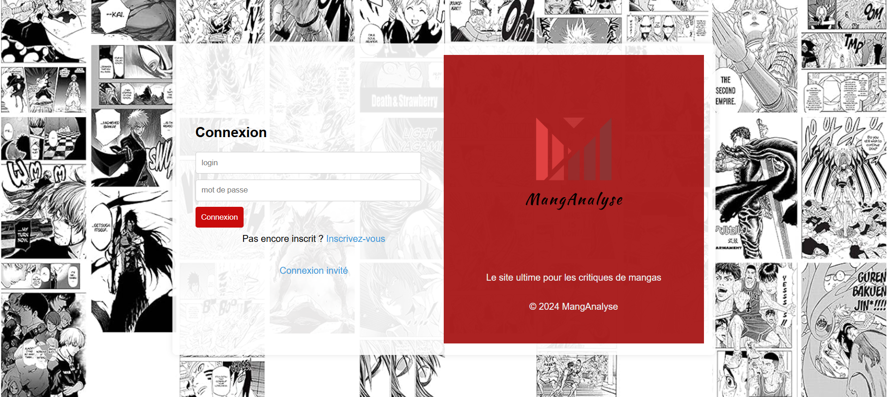
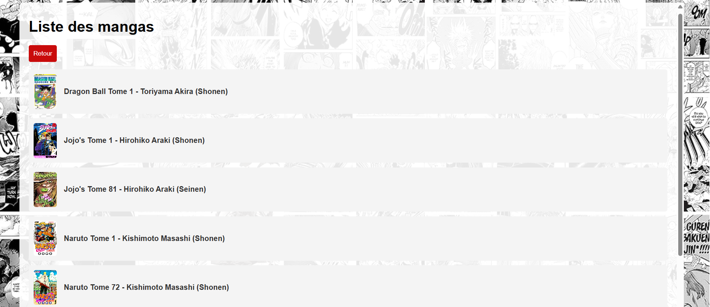

Projets
Site de gestion d’un zoo

Ce projet permet de gérer les informations d’un zoo : liste des animaux, alimentation, habitats... Il utilise HTML, CSS, PHP et MySQL avec une interface simple pour les employés.
Site de critique et analyse de manga


Ce site permet aux passionnés de manga de consulter des critiques, donner leur avis et découvrir de nouvelles œuvres. Il propose un système de notation et des fiches détaillées sur chaque titre.